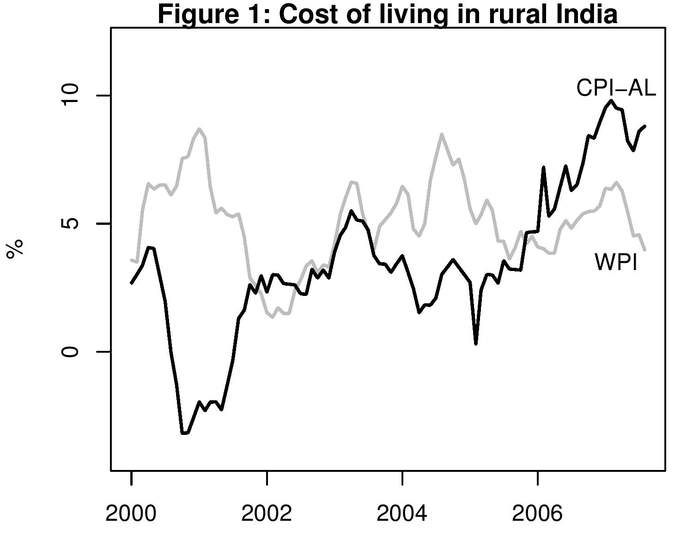
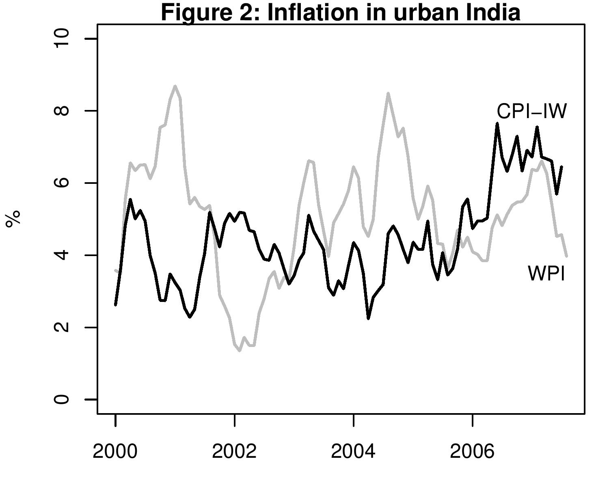
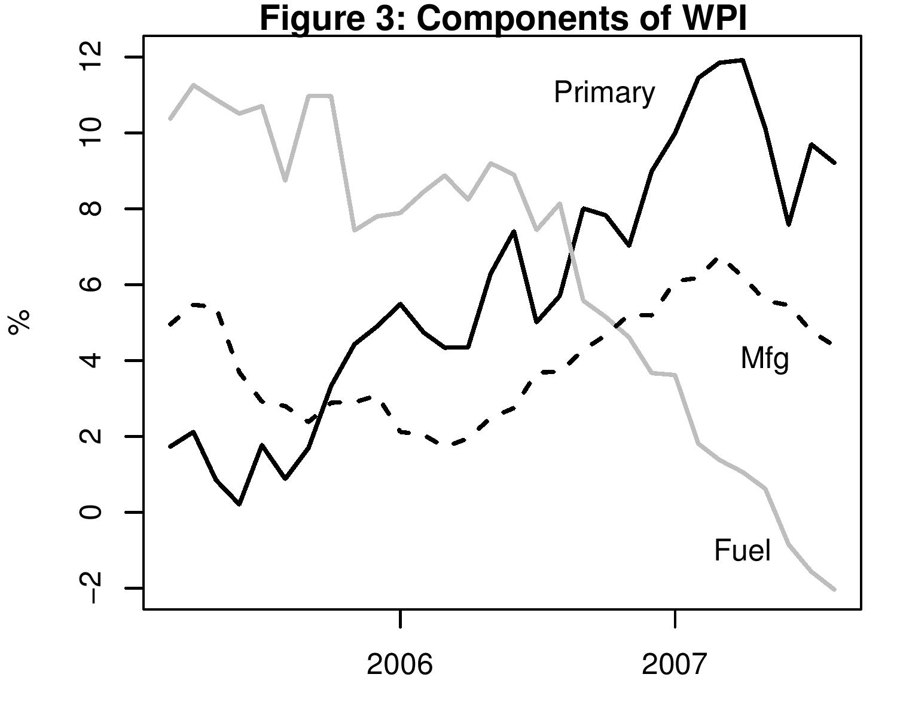

The not so good news on inflation
Indian Express, 26 September 2007
 The latest figures show that inflation based on the Wholesale Price Index (WPI) fell to 3.32 percent in the first week of September. This is the fifth month in a row when inflation numbers based on WPI have come down. However, the drop in inflation seen in the WPI is not seen in the cost of living indices measured by Consumer Price Indices. These measure the cost of a typical consumption basket.
There are two measures of the cost of living in rural India -- the Consumer Price Index for Agricultural Labourers (CPI-AL) and the Consumer Price Index for rural labour (CPI-RL). These two indices are seen to move together. The latest inflation numbers available for the cost of living in rural India is for August 2007. This figure stands at 8.8 per cent, a number much higher that the benign inflation rural India has seen since 2000.
Figure 1 compares inflation based on monthly data for CPI-AL and the WPI. It shows that the cost of living for the bulk of the Indian population has been rising steadily since 2005. The inflation based on WPI has usually failed to track the level and direction of price rise for the rural population. Figure 1 shows that between 2000 and 2002 when inflation based on CPI-AL was falling, inflation based on WPI was rising and when the cost of living for rural India was rising very rapidly, WPI was deccelerating. This happened again between 2003 and 2005. The graph shows how the WPI behaved like a mirror image of the CPI-AL inflation for these periods. Currently both CPI-AL and WPI are deccelerating but the levels and pace of change is different. Inflation based on the CPI-AL has declined from 9.5 percent in March to 8.8 in August. It is likely to come down further in September, but it will be nowhere near the 3.3 percent of the WPI. As a consequence, the feel good on headine inflation is not being felt by rural consumers.
 Figure 2 shows the cost for living index for urban India. Again there are two measures for the cost of living -- the Consumer Price Index for Industrial Workers (CPI-IW) and the Consumer Price Index for Urban Non Manual Employees. Like the two indices for the rural population, these two also tend to move together. An urban family typically spends its income on a different bundle of goods and services than a rural family and the rural and urban index do not always move together.
Why does the WPI not capture the movement in the cost of living indices? The answer lies in Figure 3 which shows the components of the WPI in the recent period, all of which are falling since mid-2007. The WPI has 3 components -- primary, fuel and manufacturing. The weights given are not the consumption expenditure in household incomes in either rural or urban India. Primary articles like food have a weight of 22 percent, fuel of 14 percent and manufacturing of 64 percent in the WPI. From the middle of 2006 the growth rate of fuel prices has stabilised. Indeed, for this component, prices in August were 2 percent lower than in August 2006. The weight of this component is not as big in a typical consumer's basket. Therefore, the fall in the inflation rate of fuel does not pull down the cost of living as much. The rise in world oil price to USD 80 per barrel is not reflected in these prices as petroleum prices are administered. At some point soon, when prices in India are raised to relect higher world prices, WPI fuel is going to show inflation. Inflation in primary articles continues to be above 9 percent.
 Most countries track inflation based on consumer prices, based on prices of the goods and services consumers spend their income on, or producer prices, based on what is produced by industy. In India the CPI is computed monthly and comes out with a lag. The WPI does not have weights assigned to components based on anybody's expenditure basket but its strong point is that it comes out timely. For instance, already the data for the first week of September, ending 8th September is available. However, as we have seen above the WPI is a misleading measure of the cost of living. The excessive focus on WPI, which provides news content and sound bytes week after week can lead to inaccurate analysis and policy making.
Back up to Ila Patnaik's media page
Back up to Ila Patnaik's home page